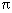

asin - arc sine function
#include <math.h> double asin(double x);
The asin() function computes the principal value of the arc sine of x. The value of x should be in the range [-1,1].An application wishing to check for error situations should set errno to 0, then call asin(). If errno is non-zero on return, or the return value is NaN, an error has occurred.
Upon successful completion, asin() returns the arc sine of x, in the range [-/2, /2] radians. If the value of x is not in the range [-1,1], and is not ±Inf or NaN, either 0.0 or NaN is returned and errno is set to [EDOM].If x is NaN, NaN is returned and errno may be set to [EDOM].
If x is ±Inf, either 0.0 is returned and errno is set to [EDOM] or NaN is returned and errno may be set to [EDOM].
If the result underflows, 0.0 is returned and errno may be set to [ERANGE].
The asin() function will fail if:
- [EDOM]
- The value x is not ±Inf or NaN and is not in the range [-1,1].
The asin() function may fail if:
- [EDOM]
- The value of x is ±Inf or NaN.
- [ERANGE]
- The result underflows.
No other errors will occur.
None.
None.
None.
isnan(), sin(), <math.h>.
Derived from Issue 1 of the SVID.